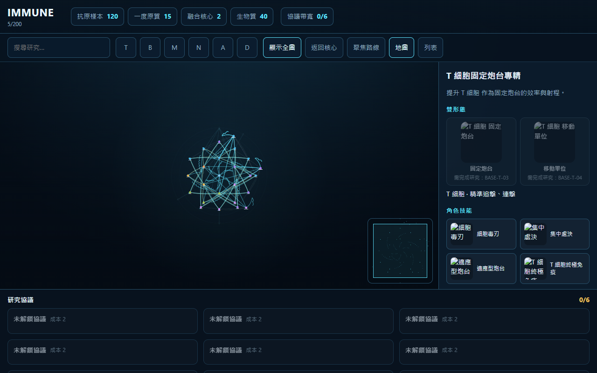
Fit all · 顯示全圖Show 31 anchors at 0.35×–0.55× LOD
Radial research star map · 200 real nodes · pan / zoom / research / protocol loadout

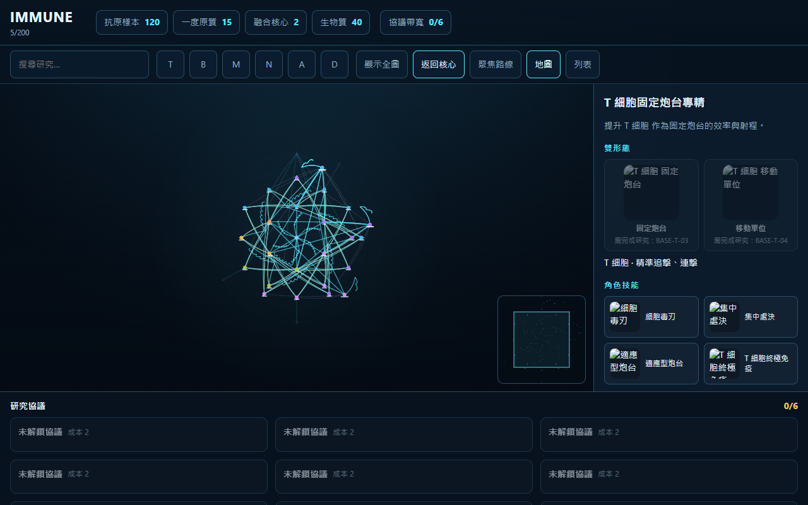
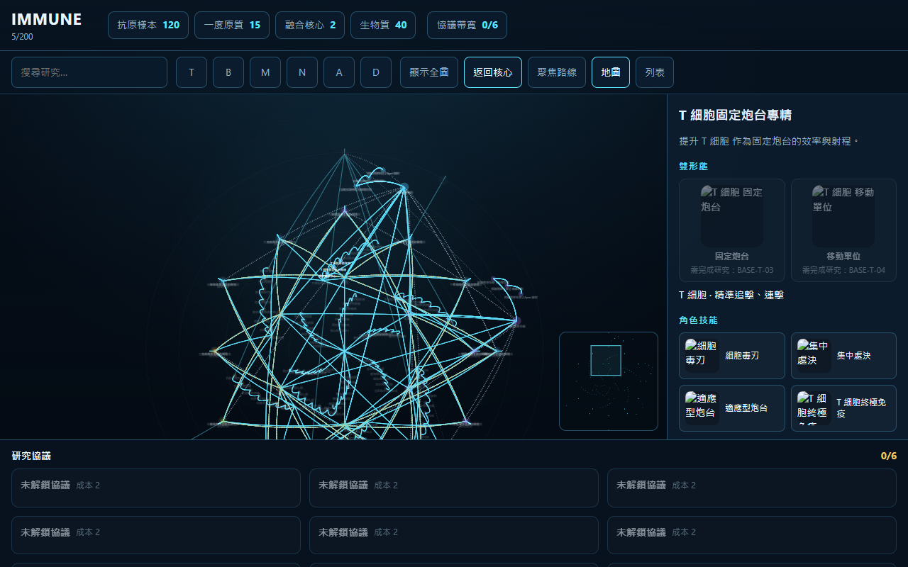
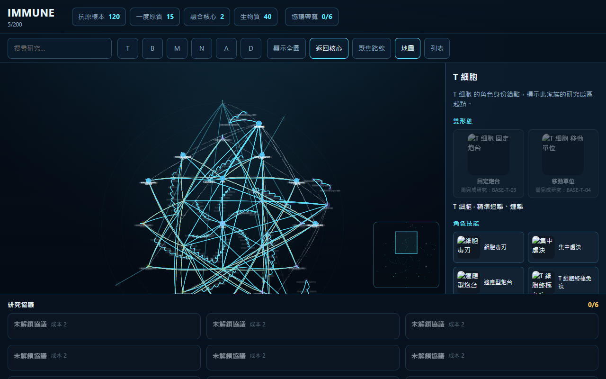
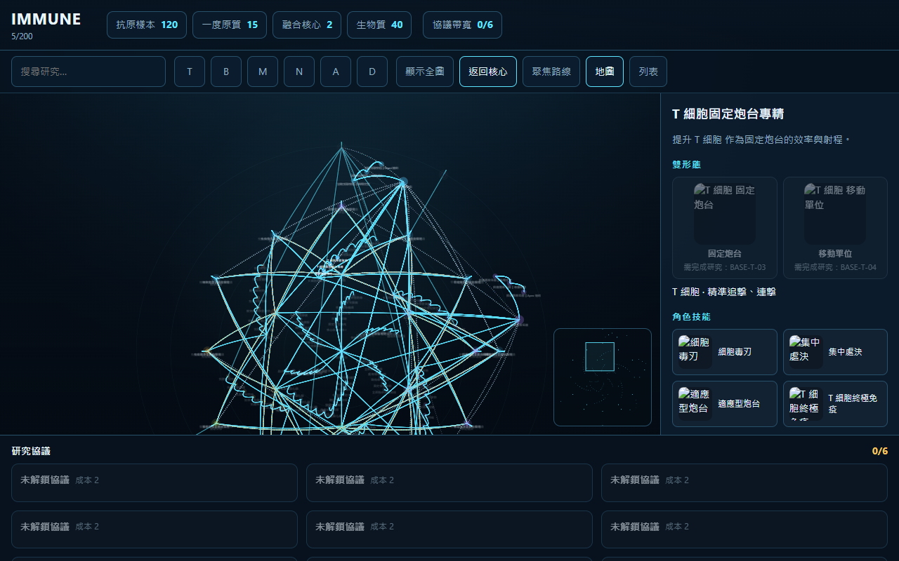
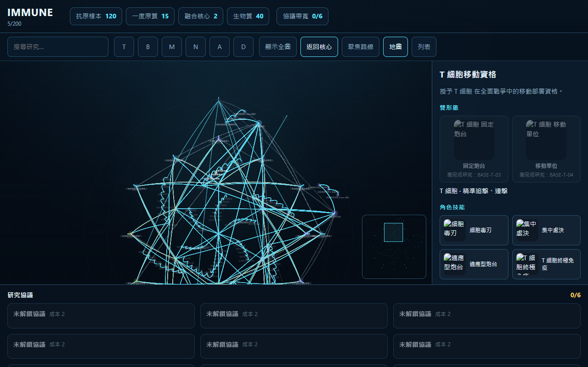
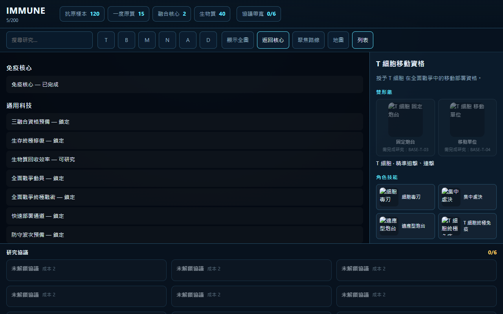
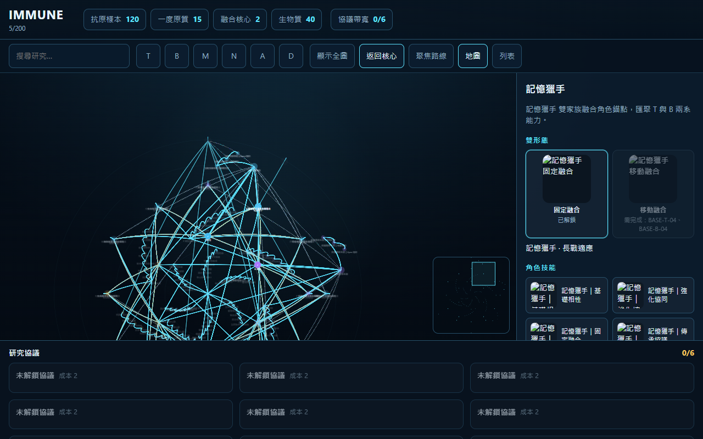
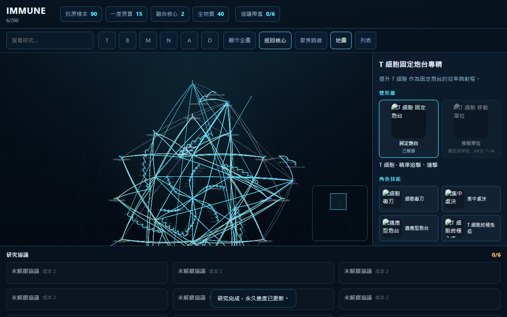
Demo boot: 22 revealed / 5 completed. Immune energy never enters this screen — only 抗原樣本, 一度原質, 融合核心, 生物質.
| Input | Where | Result |
|---|---|---|
| Drag empty | Tree viewport | Pan camera |
| Wheel / pinch | Cursor / touch | Zoom 0.35×–2.4× |
| Click node | [data-node-id] | Select + route focus |
| Double-click | character_anchor | Focus point @ 1.05× |
| F / 追蹤 | Detail or key | Track · max 3 |
| R / 研究 | Ready nodes only | Spend costs · reveal next |
| Home / Esc / B | Keyboard | Core · restore bookmark · push bookmark |
| 裝備 / 卸下 | Protocol dock | Bandwidth 1/2/3 · one Apex |
States never use color alone: ✓ complete · ● ready · ◎ tracked · ! resources · ◌ prereq.
IMMUNE
Segoe UI / Microsoft JhengHei · 14px body · 22px brand
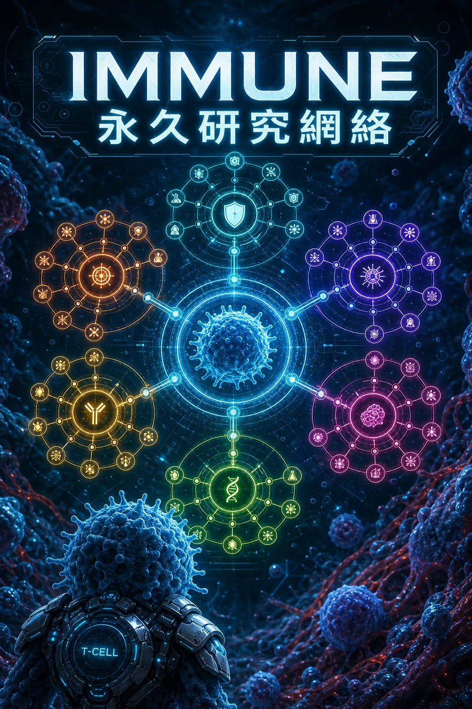
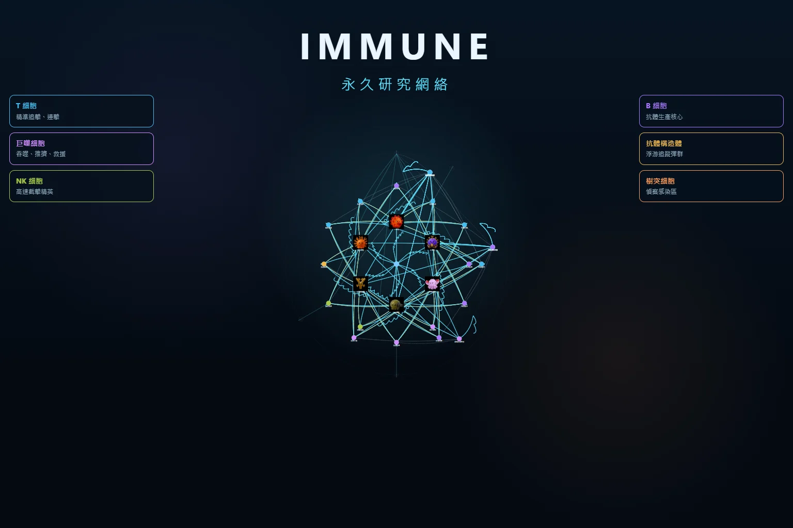
Store 3:4 + catalog 16:9. 200 node icons · 31 portraits · 124 skills.
T 細胞 · B 細胞 · 巨噬細胞 · NK 細胞 · 抗體構造體 · 樹突細胞
記憶獵手 · 吞噬突擊 · 細胞毒刃 · 精準抗體 · 免疫指揮
適應免疫核心 → IMMUNE PRIME
標記 / 抗體 / 腐蝕 / 緩速 / 感染 / 鏈鎖 / 暴擊